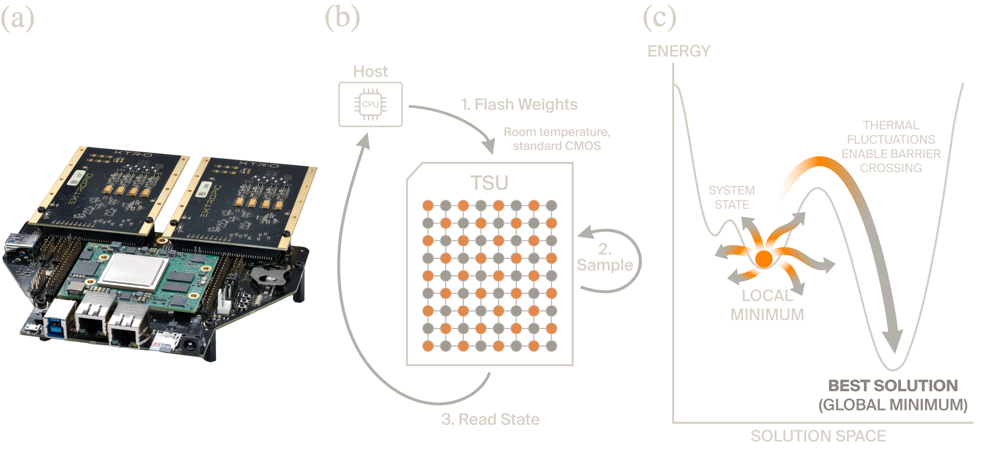
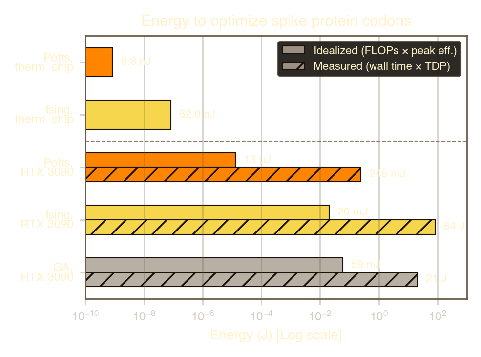
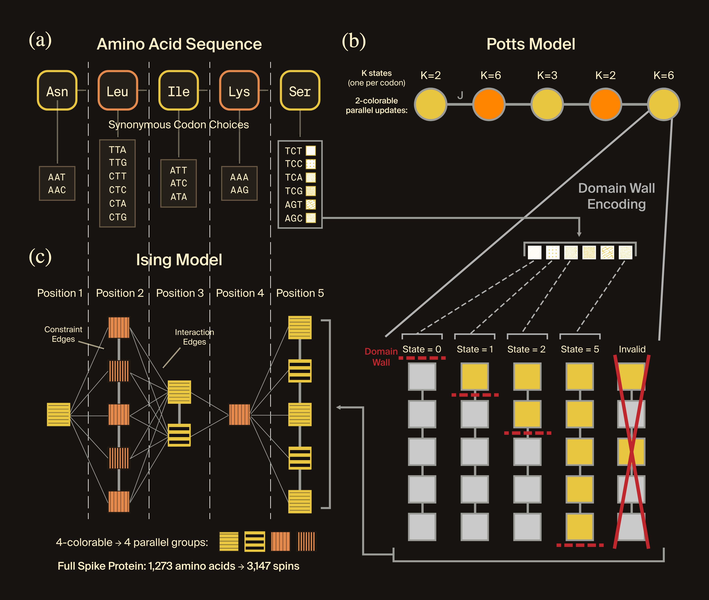

Energy-efficient Codon Optimization on Thermodynamic Hardware
The growing energy demand for computation is becoming increasingly unsustainable. Thermodynamic computing, which harnesses physical thermal fluctuations as a computational resource rather than suppressing them, offers orders-of-magnitude energy savings for probabilistic and combinatorial tasks. Pharmaceutical R&D, heavily reliant on computational optimization and sampling, is a natural application domain. Here we present what is, to our knowledge, the first concrete pharmaceutical application mapped to thermodynamic hardware with energy estimates grounded in prototype measurements. We reduce mRNA codon optimization, a combinatorial problem routinely solved in drug development, to sampling from an Ising model, making it directly executable on a thermodynamic sampling unit (TSU). Benchmarking three approaches (Potts sampling, Ising sampling, and a genetic algorithm baseline) on the SARS-CoV-2 spike protein, we find that all achieve comparable optimization quality (scores \({\sim}234\)–\(240\)), but energy estimates based on validated hardware models indicate that a TSU could solve this problem using approximately \(10^6\times\) less energy than a conventional GPU. All code is released under an open-source license.
1 Introduction
Recent large-scale investment in artificial intelligence and computational workloads is placing growing strain on the global energy infrastructure. Every year, U.S. companies spend an amount exceeding the inflation-adjusted cost of the Apollo program on AI-focused data centers. With demand projected to grow from 59 GW in 2025 to more than 120 GW by 2030 (International Energy Agency 2024), there are concerns that the energy demand for data centers is becoming unsustainable. At the same time, demand driven increases in model sizes and deployment footprints continue to grow rapidly, creating an urgent need for more efficient computing paradigms.
Existing AI systems are optimized for GPU hardware which was originally designed for computer graphics and whose suitability for machine learning was only discovered accidentally decades later. Had different cost effective hardware architectures been available, algorithms may well have evolved in a different and possibly more energy-efficient direction. This interplay between algorithm research and hardware availability, known as the “hardware lottery” (Hooker 2021), entrenches hardware-algorithm pairings that may be far from optimal. Prudent planning calls for systematic exploration of alternative computing architectures (Jelinčič et al. 2025).

Thermodynamic computing offers one such alternative (Conte et al. 2019; Hylton 2020). In nature, thermodynamic laws govern the behavior of large collections of interacting atoms, which inevitably tend to settle into stable arrangements with near-minimum energy. Many famous optimization algorithms including Langevin Monte Carlo, Simulated Annealing, and Diffusion Modeling, are inspired by (and in some cases, exactly simulating) this phenomenon. The goal of thermodynamic computing hardware is to target and accelerate algorithms of this type.
More specifically, this hardware can be used to perform an analog simulation of the physical dynamics that would arise in a system governed by a user-defined energy function. Allowing this simulation to relax toward thermal equilibrium produces samples from the corresponding Boltzmann distribution. This stands in sharp contrast to conventional computing, where GPUs and CPUs expend substantial energy suppressing thermal noise, an intrinsic property of all integrated circuits, in order to guarantee deterministic operation. When such hardware is then used to run inherently probabilistic algorithms, the result is a fundamental inefficiency: considerable energy is spent enforcing perfect determinism, only for the software to immediately re-inject randomness through pseudo-random number generation. Thermodynamic hardware circumvents this logic entirely, harnessing the very thermal fluctuations that conventional processors expend energy to suppress, and thereby performing natively what conventional hardware must laboriously simulate (Jelinčič et al. 2025).
The physical embodiment of this approach is the thermodynamic sampling unit (TSU): a programmable chip fabricated in standard CMOS, operating at room temperature, that contains arrays of probabilistic computing elements connected in a sparse, locally-connected graph (1). A TSU is built from a family of primitive sampling circuits ([tab:tsu-primitives]), each of which natively samples from a different distribution class: p-bits (Bernoulli), p-dits (categorical), p-modes (Gaussian), and p-MoGs (mixture of Gaussians). By programming the interaction weights between these elements, the chip’s thermal fluctuations explore the corresponding Boltzmann distribution. This work uses p-bits for the Ising formulation and, prospectively, p-dits for the native Potts formulation. A TSU operates in a flash-sample-read cycle: a host computer programs the interaction weights, the chip performs many rounds of Gibbs sampling at extreme speed and low energy, and the host reads back the resulting state.
| Primitive | Distribution | Hardware implementation |
|---|---|---|
| p-bit | Bernoulli (binary) | Subthreshold transistor RNG with sigmoidal bias |
| p-dit | Categorical (\(K\)-state) | Softmax sampling circuit |
| p-mode | Gaussian (continuous) | Analog noise source with programmable mean/variance |
| p-MoG | Mixture of Gaussians | Array of coupled p-modes |
Recent work has demonstrated that a device based on this architecture could achieve performance parity with GPUs on a generative image benchmark while using approximately \(10{,}000\times\) less energy per sample (Jelinčič et al. 2025). Real world measurements from prototype hardware have validated the underlying energy models. Prototype hardware is already in production and a TSU capable of running the algorithms described in this paper is projected to be commercially available within two years.
1.0.0.1 Pharmaceutical applications.
Pharmaceutical research and development is a natural application domain for thermodynamic computing. Drug discovery relies heavily on computational optimization and sampling. For example: conformational search, binding affinity estimation, molecular design, protein folding and sequence optimization all reduce to energy minimization or probabilistic inference over discrete or continuous variables. These are precisely the problems for which thermodynamic hardware is designed. Conventional hardware such as GPUs, optimized for deterministic matrix multiplication, is inherently inefficient for these natively probabilistic workloads. Nevertheless, to our knowledge, no prior work has demonstrated the potential applications of thermodynamic computing to discrete optimization problems in drug design nor provided energy estimates grounded in real measurements.
In this work, we provide such a demonstration using mRNA codon optimization as an example real world workload. In all living organisms, proteins are synthesized by ribosomes that read messenger RNA (mRNA) in triplets called codons, each coding for one amino acid. Because the genetic code is degenerate, with 61 codons encoding for only 20 amino acids, most amino acids can be specified by two to six synonymous codons. Although synonymous codons encode the same amino acid, they are not functionally equivalent: condon sequence matters and different organisms use them at different frequencies (a phenomenon known as codon bias). This affects translation speed, mRNA stability, and ultimately protein expression levels (Gustafsson et al. 2004; Quax et al. 2015; Brulé and Grayhack 2017). When expressing a recombinant protein in a host organism, choosing codons that match the host’s preferences and selecting codon sequences for optimum translation speed and stability, in a process referred to as codon optimization, can dramatically improve expression. For a more comprehensive review of codon optimization and its biological underpinnings, we refer the reader to (Gustafsson et al. 2004) and (Quax et al. 2015).
Codon optimization is a combinatorial optimization problem that is routinely solved in pharmaceutical and biotechnology pipelines, with direct relevance to mRNA therapeutics, including COVID-19 vaccines (Polack et al. 2020) and protein replacement therapies (Fox et al. 2021). We formulate the problem as a Potts model (a probabilistic graphical model with categorical variables) and compile it to an Ising model via domain-wall encoding (Chancellor 2019), making it executable on binary (p-bit) hardware. We show that all three approaches, Potts sampling, Ising sampling, and a carefully tuned genetic algorithm (GA) baseline, achieve near-identical optimization quality on the SARS-CoV-2 spike protein. The decisive differentiator is energy consumption: estimates based on validated hardware models indicate that a TSU could solve this problem using between \(10^5\)–\(10^9\) times less energy than a conventional GPU. All code is built on the THRML library (Jelinčič et al. 2025) and available under an open-license at github.com/extropic-ai/thrml.
2 Results
| Setting | Method | Mean score \(\pm\) std | Best score |
|---|---|---|---|
| Standard (Fox) | Potts model (10 sweeps) | \(\textbf{234.6} \pm 0.2\) | 234.0 |
| Ising model (\(2 \times 10^4\) sweeps, DWE) | \(243.0 \pm 0.8\) | 240.5 | |
| Genetic algorithm (tuned) | \(234.8 \pm 0.4\) | 233.9 | |
| Hard | Potts model (10 sweeps) | \(\textbf{445.2} \pm 1.0\) | 444.0 |
| Ising model (\(4 \times 10^4\) sweeps, DWE) | \(452.8 \pm 1.1\) | 449.2 | |
| Genetic algorithm (tuned) | \(446.4 \pm 1.0\) | 444.4 |
2.1 Problem setup
We benchmark all methods using the SARS-CoV-2 spike protein, a biologically relevant sequence of \(L = 1{,}273\) amino acids (requiring \(3{,}819\) mRNA nucleotides), using Escherichia coli K-12 as the host organism. The energy function to be minimized is a weighted combination of three terms (see 4.1 and 3a): a codon usage penalty (\(w_f = 0.1\)) that favors codons commonly used in the host, a GC content term (\(w_\text{GC} = 1\)) that penalizes deviation from a target GC fraction of \(\rho_T = 0.5\), and a repeat penalty (\(w_R = 0.1\)) that discourages long runs of identical nucleotides across codon boundaries. These weights follow the formulation of (Fox et al. 2021) and reflect commonly used values in codon optimization practice.
We evaluate three optimization methods. First, a Potts model sampler that operates directly on categorical codon variables (see 4.2 and 3b) using simulated annealing with block Gibbs updates (10 sweeps). Second, an Ising model sampler that encodes the categorical variables into binary spins via domain-wall encoding (see 4.4 and 3b,c) and performs simulated annealing with simultaneous penalty ramping (\(2 \times 10^4\) sweeps). Third, a genetic algorithm (GA) baseline reimplemented from (Fox et al. 2021) with more carefully tuned parameters (population 200, \(1{,}000\) generations, mutation rate \(0.003\); see 4.6 for sensitivity analysis).
2.2 Optimization quality
[tab:scores] summarizes the optimization quality achieved by each method under both the standard weights from (Fox et al. 2021) and the harder parameter setting described in 4.1. Under both settings, all three methods produce solutions of comparable quality. The Potts model and GA achieve essentially identical performance, while the Ising model scores slightly higher, which is expected given the overhead of the binary encoding.
The key observation is that all methods effectively achieve the same optimization quality under both parameter settings, within \({\sim}4\%\) of each other, making the solution quality interchangeable and the energy consumption the decisive differentiator. All energy estimates below are for the standard parameter setting from (Fox et al. 2021).
2.3 Energy consumption
We estimate the energy required to solve the codon optimization problem on thermodynamic hardware and compare it to conventional GPU execution (see 4.7 for full methodology). The TSU energy model, validated against prototype hardware measurements (Jelinčič et al. 2025), estimates \(E_\text{cell} \approx 1.3\) fJ per spin per Gibbs step.
2.3.0.1 Ising chip.
The Ising model uses \(N = 3{,}147\) binary spins (p-bits) and \(K = 2 \times 10^4\) Gibbs iterations. The estimated energy is: \[\begin{align} E_\text{Ising} &= K \times N \times E_\text{cell} \nonumber \\ &= 2 \times 10^4 \times 3{,}147 \times 1.3 \times 10^{-15}~\text{J} \approx 82~\text{nJ}. \end{align}\]
2.3.0.2 Potts chip (projected).
Based on a physical model of categorical (p-dit) hardware extrapolated from prototype measurements, a Potts chip would consume approximately \(0.084\) nJ per Gibbs sweep for \(L = 1{,}273\) nodes, giving \(10 \times 0.084 = 0.84\) nJ for the full optimization. We note that Potts (p-dit) hardware does not yet exist; the Ising (p-bit) TSU is the near-term target. An example of how a Potts model could be implemented in hardware can be found in (Whitehead et al. 2023). We based our energy estimates both on the measurements from our prototype and a design similar to the one proposed in (Whitehead et al. 2023).
2.3.0.3 GPU energy.
For GPU comparison on an NVIDIA RTX 3090 (350 W TDP), we bracket the energy between an idealized lower bound (peak FLOP throughput) and a measured upper bound (wall-clock time \(\times\) TDP); see 4.7. The Potts model requires \({\sim}1.3 \times 10^6\) FLOPs (10 sweeps), the Ising model \({\sim}2 \times 10^9\) FLOPs (\(2 \times 10^4\) sweeps), and the GA \({\sim}6 \times 10^9\) FLOPs—roughly \(4{,}600\times\) more than the Potts sampler for the same solution quality.
1 and 2 present the complete energy comparison.
| Configuration | Energy | Ratio v. Ising | |
|---|---|---|---|
| Potts (proj.) | 0.84 | nJ | \(0.01\times\) |
| Ising | 82 | nJ | \(1\times\) (ref.) |
| GPU — idealised (FLOPs \(\times\) peak eff.) | |||
| Potts, 3090 | 13 | μJ | \(160\times\) |
| Ising, 3090 | 20 | mJ | \(2.4\!\times\!10^5\) |
| GA, 3090 | 59 | mJ | \(7.2\!\times\!10^5\) |
| GPU — measured (wall time \(\times\) TDP) | |||
| Potts, 3090 | 245 | mJ | \(3.0\!\times\!10^6\) |
| Ising, 3090 | \({\sim}84\) | J | \({\sim}10^9\) |
| GA, 3090 | 21 | J | \(2.6\!\times\!10^8\) |

Several features of this comparison are noteworthy. First, even at idealized peak efficiency (a generous lower bound that credits the GPU with 100% utilization) the thermodynamic chip is between \(160\) and \(2.4 \times 10^5\) times more efficient than a GPU running the same algorithm (Potts and Ising respectively). Second, realistic GPU utilization is far below peak: the Potts model’s \({\sim}10^6\) FLOPs represent a tiny fraction of the RTX 3090’s throughput, and execution time is dominated by kernel launch overhead. The measured GPU energy therefore exceeds the idealized estimate by several orders of magnitude. Third, the GA, which appears to be the most common algorithm used for codon optimization (Fox et al. 2021), requires \({\sim}4{,}600\) times more FLOPs than the Potts sampler for the same solution quality, compounding the hardware efficiency gap. The combined advantage of a more efficient algorithm running on more efficient hardware yields energy savings of \(10^5\)–\(10^9\) times relative to a GPU running the GA.
2.4 Scaling considerations
Solving the codon optimization problem for the spike protein requires \(3{,}147\) spins in the Ising formulation, well within the capacity of near-term TSU designs (\({\sim}250{,}000\) p-bits). This leaves substantial headroom for larger proteins, longer mRNA constructs, or more complex energy functions incorporating additional biological objectives. The chain-like graph structure of the problem, with a maximum node degree of 12, maps naturally to the sparse, locally-connected topology of a TSU.
At a random number generator (RNG) decorrelation time of \({\sim}100\) ns (measured from prototype hardware (Jelinčič et al. 2025)), a full Gibbs step on a 4-colorable graph takes \({\sim}400\) ns. The \(2 \times 10^4\)-step Ising optimization would therefore complete in approximately \(8\) ms on a TSU which is more than fast enough for integration into real-time computational pipelines.
3 Discussion
This work demonstrates that a real world pharmaceutical optimization problem can be efficiently mapped to thermodynamic hardware, with energy savings of five to nine orders of magnitude compared to conventional computing (1). By taking a concrete pharmaceutical application from problem formulation through hardware mapping to energy estimation grounded in prototype measurements, it provides a template for evaluating thermodynamic computing on applied problems.
The Potts formulation is algorithmically superior to the Ising encoding: it uses fewer variables (\(1{,}273\) categorical vs. \(3{,}147\) binary), requires fewer sampling sweeps (10 vs. \(2 \times 10^4\)), and achieves slightly better scores. However, building Ising (p-bit) hardware is substantially simpler than building Potts (p-dit) hardware. A TSU capable of running the Ising formulation could be commercially available within one to two years, while categorical hardware remains further out. Crucially, the \({\sim}100\times\) energy gap between the projected Potts chip and the Ising chip is modest compared to the \(10^5\)–\(10^9\) times advantage that both enjoy over GPUs. This favors the Ising formulation as the practical near-term path.
We acknowledge several limitations: The codon optimization objective used here is a simplified version of what production pipelines employ; more involved formulations may include terms for mRNA secondary structure, CpG dinucleotide content, and untranslated region effects (Fox et al. 2021). These can be incorporated as additional local or pairwise energy terms without fundamentally changing the graph structure or hardware requirements; The energy estimates for the Potts chip are projections based on extrapolation from prototype measurements, while the Ising estimates rest on a validated physical model with close agreement to experimental data (Jelinčič et al. 2025).; Finally, codon optimization itself is not the computational bottleneck in drug development, but it does serve as a concrete, accessible proof of concept that the pipeline from problem formulation through hardware mapping to energy estimation is viable.
More broadly, thermodynamic computing is not limited to codon optimization. The same hardware that solves Ising models for codon sequences can accelerate conformational search, binding affinity estimation, molecular generation, and other sampling-intensive drug discovery workloads. The key insight is that drug discovery problems naturally decompose into energy minimization over discrete or continuous variables, precisely the class of problems for which thermodynamic hardware is designed. The rapid growth of mRNA therapeutics, from COVID-19 vaccines (Polack et al. 2020) to cancer immunotherapies and protein replacement therapies, ensures that codon optimization itself will remain an important step in drug development pipelines, and one where energy-efficient computation at scale becomes increasingly valuable. As thermodynamic hardware matures, we anticipate it will unlock efficient computation across a broad range of drug discovery and similar scientific applications.
3.0.0.1 Code availability.
All code for this work is open-source at [URL TBD], built on the THRML library (Jelinčič et al. 2025).
4 Methods
4.1 Codon optimization problem
Given a protein sequence of \(L\) amino acids \(a_1, \ldots, a_L\), the codon optimization problem is to select a synonymous codon \(c_p \in S_p\) at each position \(p\) to produce an mRNA sequence with desirable expression properties in a target host organism (Gustafsson et al. 2004; Quax et al. 2015; Brulé and Grayhack 2017). The set \(S_p\) contains all codons encoding amino acid \(a_p\), with \(|S_p| \in \{1, 2, 3, 4, 6\}\) depending on the amino acid.
The objective is to minimize the energy function: \[\begin{align} E(c_1, \ldots, c_L) &= w_f \sum_{p=1}^{L} u(c_p) + w_R \sum_{p=1}^{L-1} r(c_p, c_{p+1}) \nonumber \\ &\quad + w_\text{GC} \bigg( \frac{1}{3L} \sum_{p=1}^{L} g(c_p) - \rho_T \bigg)^{\!2} \label{eq:energy} \end{align}\] where:
The codon usage term \(u(c) = |\log(f(c) / f_\text{max}^{(a)})|\) measures how rare codon \(c\) is in the host relative to the most common codon for its amino acid, using host-specific codon frequency tables (Nakamura et al. 2000). This term is unary: it depends on each position independently.
The GC content term penalizes deviation of the overall GC fraction from a target \(\rho_T\), where \(g(c) \in \{0, 1, 2, 3\}\) counts the G and C nucleotides in codon \(c\). This term is global: it couples all positions.
The repeat penalty \(r(c_p, c_{p+1}) = m(c_p, c_{p+1})^2 - 1\) penalizes long runs of identical nucleotides across codon boundaries, where \(m\) is the length of the longest contiguous run in the 6-character concatenation. This term is pairwise: it depends on adjacent positions only.
We follow the formulation and weights of (Fox et al. 2021): \(w_f = 0.1\), \(w_\text{GC} = 1\), and \(w_R = 0.1\). These reflect commonly used values in codon optimization practice, and all energy estimates in 2.3 are based on this setting. We additionally report optimization quality for a harder parameter setting (\(w_f = 0.1\), \(w_\text{GC} = 2 \times 10^4\), \(w_R = 0.2\)) in which the three energy terms are approximately equally balanced, making the problem substantially more difficult. Under the standard (Fox) weights the GC content term is negligible relative to the other two, which makes the problem easier; indeed all three methods require more iterations to converge under the hard weights than under the standard ones (see [tab:scores]).
4.2 Potts model formulation
The codon optimization problem maps naturally to a Potts model (Wu 1982): each amino acid position \(p\) becomes a categorical random variable \(X_p\) with \(|S_p|\) states, one for each synonymous codon. All variables are padded to \(K_\text{max} = 6\) states, with invalid states receiving a large positive bias that effectively excludes them.

The Potts energy decomposes into unary biases \(h_p(k)\) (from the codon usage term and validity constraints) and pairwise interactions \(J_p(k, k')\) (from the repeat penalty between adjacent positions \(p\) and \(p+1\)): \[\begin{equation} E(\mathbf{x}) = \sum_{p=1}^{L} h_p(x_p) + \sum_{p=1}^{L-1} J_p(x_p, x_{p+1}). \end{equation}\]
Since each position interacts only with its immediate neighbors, the resulting graph is a chain, which is 2-colorable. This enables efficient parallel block Gibbs sampling: conditioned on odd-indexed positions, all even-indexed positions are conditionally independent and can be sampled simultaneously via a softmax distribution over their \(K\) states, and vice versa. One full Gibbs sweep consists of updating the even block and then the odd block.
4.3 Adaptive GC coefficient
The GC content term in [eq:energy] couples all positions through a global quadratic constraint. Expanding this term directly would require all-to-all pairwise interactions, which is incompatible with the sparse connectivity of a TSU. All-to-all connectivity also increases the chromatic number of the graph to be equal to the total number of nodes, which completely prevents sampling blocks of nodes in parallel. Instead, we approximate it with an adaptive linear term: a per-chain coefficient \(\lambda\) that modifies the unary bias of each codon proportionally to its GC count: \[\begin{equation} \tilde{h}_p(k) = h_p(k) + \lambda \cdot g(c_p^{(k)}). \end{equation}\]
At each annealing step, \(\lambda\) is updated based on the current GC fraction error: \[\begin{equation} \lambda \leftarrow \lambda - \eta \cdot (\rho_\text{current} - \rho_T) \end{equation}\] where \(\eta > 0\) is an adaptation rate. If the current GC fraction exceeds the target, \(\lambda\) decreases (penalizing high-GC codons); if below, \(\lambda\) increases. To prevent the linear approximation from dominating, \(\lambda\) is clamped to never exceed the gradient of the true quadratic GC penalty, \(\lambda_\text{true} = -2 w_\text{GC} (\rho_\text{current} - \rho_T) / (3L)\).
This scheme is naturally compatible with the TSU’s flash-sample-read cycle: \(\lambda\) is updated on the host between sampling bursts and folded into the biases before the next flash. This incurs no additional cost, since new weights would regardless need to be flashed to the TSU due to annealing.
4.4 Ising embedding via domain-wall encoding
Binary spin hardware (with p-bits) is simpler to build and closer to commercial availability than categorical hardware (with p-dits). To make the codon optimization problem executable on a binary TSU, we compile the Potts model into an Ising model using domain-wall encoding (DWE) (Chancellor 2019; Berwald et al. 2022; Chen et al. 2021).
A \(K\)-state Potts variable is represented by \(K{-}1\) binary spins \(s_1, \ldots, s_{K-1} \in \{-1, +1\}\) arranged in a chain. Valid states follow a thermometer pattern: state \(k\) corresponds to \(s_1 = \cdots = s_k = +1\) and \(s_{k+1} = \cdots = s_{K-1} = -1\). The “domain wall”—the boundary between the \(+1\) and \(-1\) regions—encodes the Potts state. Invalid configurations (with a \(-1\) followed by a \(+1\)) are penalized by ferromagnetic nearest-neighbor couplings of strength \(P/4\) within each position’s spin chain, adding \(K{-}2\) constraint edges per position.
DWE offers several advantages over the more common one-hot encoding (Lucas 2014). First, the constraint graph is a chain (\(K{-}2\) edges) rather than a clique (\(K(K{-}1)/2\) edges), yielding a much sparser graph. Second, the chain constraint is 2-colorable, which at most doubles the chromatic number of the overall graph—unlike one-hot, which requires \(K\) colors for its penalty clique, which can therefore increase the chromatic number of the graph \(K\)-fold. Since the chromatic number of the graph determines how many sampling steps are required per Gibbs iteration, the one-hot encoding is typically \(K/2\)-times slower than DWE per Gibbs iteration, on top of possibly also requiring a far greater number of Gibbs iterations due to its slow mixing. Third, mixing at the domain wall boundary is independent of the penalty strength \(P\): the ferromagnetic contributions from the two neighbors cancel, so the Gibbs conditional depends only on the bias landscape. This eliminates the exponential mixing slowdown (Levin et al. 2009) that plagues one-hot encoding at large \(P\) (Berwald et al. 2022). Fourth, DWE has been proven optimal in the number of binary variables for quadratic interactions (Berwald et al. 2022).
Potts biases are compiled to Ising fields via first differences (\(b_i = (h_i - h_{i-1})/2\) plus boundary corrections), and Potts pairwise interactions become Ising couplings via mixed second differences (\(J_{(p,i),(q,j)} = (V_{ij} - V_{i-1,j} - V_{i,j-1} + V_{i-1,j-1})/4\)); see Supplementary Note 1 for the full derivation.
4.4.0.1 GC-sorted codon ordering.
In DWE, a single spin flip moves the Potts variable to an adjacent state (\(k \to k \pm 1\)). We order codons at each position by ascending GC count (with alphabetical tiebreaking), so that a single spin flip changes GC content by at most 1. This creates a smooth landscape for domain wall dynamics and ensures compatibility with the adaptive GC scheme.
The resulting Ising model for the spike protein contains \(N = 3{,}147\) spins (an average of \(2.47\) per amino acid position), with a maximum node degree of 12 and only local connectivity. The graph is 4-colorable using a decomposition based on position parity and spin-index parity.
4.5 Simulated annealing and P-ramping
Both the Potts and Ising models use simulated annealing with a log-spaced inverse temperature schedule: \[\begin{equation} \beta_t = \beta_\text{min} \cdot \left( \frac{\beta_\text{max}}{\beta_\text{min}} \right)^{t/T} \end{equation}\] for \(t \in \{0, \ldots, T\}\). At each temperature step, the host updates \(\beta\), recomputes the adaptive GC coefficient, flashes new weights to the TSU, and runs a fixed number of Gibbs sweeps.
For the Ising model, we simultaneously ramp the constraint penalty \(P\) on an independent log-spaced schedule from \(P_\text{min}\) to \(P_\text{max}\). Low \(P\) early in annealing permits invalid-state (defect) transitions that provide shortcuts around energy barriers in the bias landscape: when a valid intermediate state has energy exceeding \(P\), the defect route is energetically cheaper. High \(P\) at the end enforces strict constraint satisfaction. Since weights are recomputed at each annealing step anyway (for \(\beta\) and the adaptive GC coefficient), changing \(P\) adds no extra cost.
4.6 Genetic algorithm baseline
Genetic algorithms are widely used for codon optimization (Fox et al. 2021; Sandhu et al. 2008). As a baseline, we reimplemented the GA from (Fox et al. 2021) in JAX, with full JIT compilation of the generation loop and multi-chain parallelism. After systematic parameter tuning, the best configuration uses a population of 200, \(1{,}000\) generations, 10 elite and 2 lucky survivors per generation, and a mutation rate of \(0.003\).
The GA’s performance is sensitive to parameter choice. The default mutation rate of \(0.05\) from Fox et al. yields substantially worse scores (\({\sim}550\)–\(600\)), suggesting that the crossover operator provides sufficient exploration and high mutation rates are counterproductive, disrupting good partial solutions faster than selection can preserve them.
4.7 Energy estimation methodology
4.7.0.1 TSU energy model.
We use the energy model from (Jelinčič et al. 2025) (Appendix E), which provides a physical model of an all-transistor Boltzmann machine Gibbs sampler. The energy per spin per Gibbs step is \(E_\text{cell} \approx 1.3\) fJ, which includes contributions from the RNG (\({\sim}350\) aJ), biasing circuitry, clocking, and inter-cell communication. This model captures all central functional units of the hardware and has been validated against measurements from a prototype chip, with agreement within an order of magnitude.
For the Ising chip, the total energy is \(E = K \times N \times E_\text{cell}\), where \(K\) is the number of Gibbs iterations and \(N\) is the number of spins. For the Potts chip, we use a physical model of p-dit hardware extrapolated from the same prototype measurements, yielding \({\sim}0.084\) nJ per Gibbs sweep for \(L = 1{,}273\) Potts nodes.
Our Ising model has a maximum degree of 12 with only local connectivity, closely matching the setup analyzed in (Jelinčič et al. 2025). The codon problem (\(3{,}147\) spins) fits comfortably within the capacity of near-term TSU designs (\({\sim}250{,}000\) p-bits).
4.7.0.2 GPU energy model.
We estimate GPU energy on an NVIDIA RTX 3090 (350 W TDP, 35.6 TFLOPS FP32 peak) using two methods. The idealized estimate computes total FLOPs divided by peak FLOP/s, multiplied by TDP. This represents a lower bound, as no real workload sustains 100% utilization. The measured estimate multiplies the wall-clock time of our JIT-compiled JAX implementation by TDP, giving an upper bound since the GPU may not draw full TDP power during execution. FLOP counts were estimated by analyzing the per-step computational requirements of each algorithm (see Supplementary Note 2 for details).
References